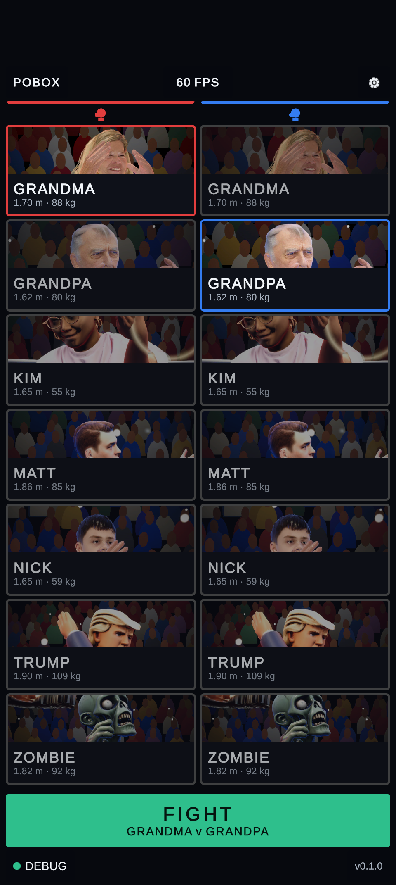
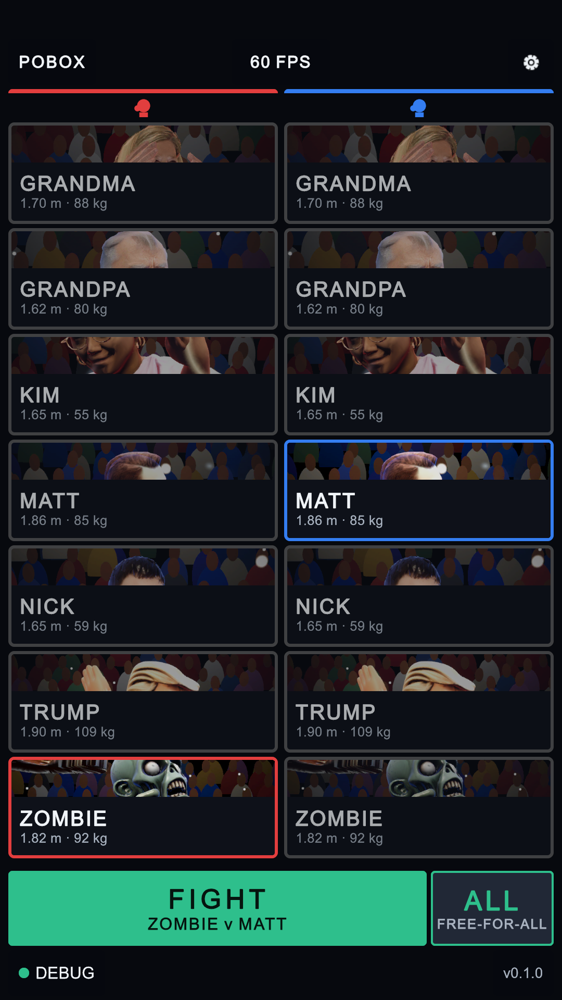
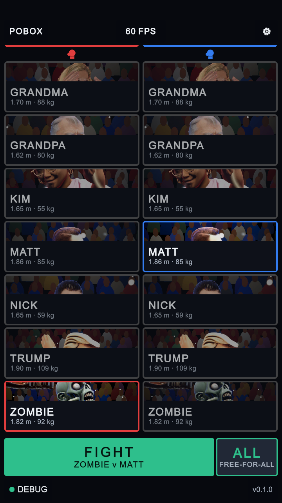
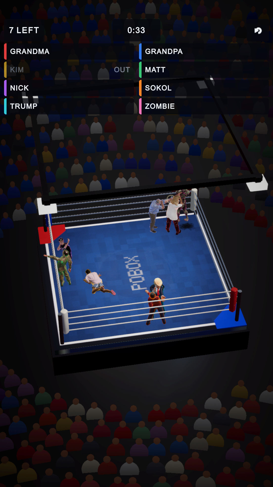
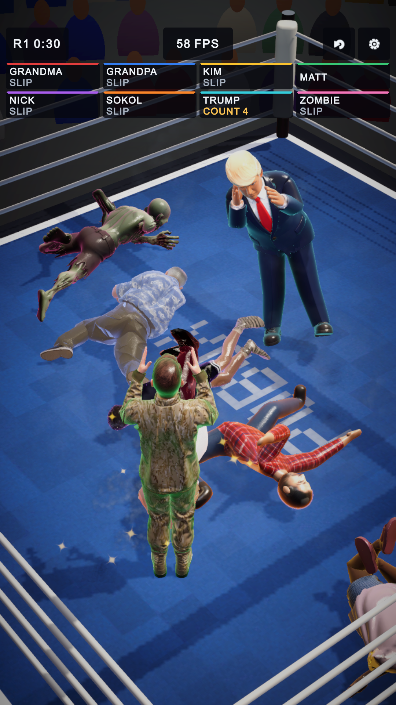
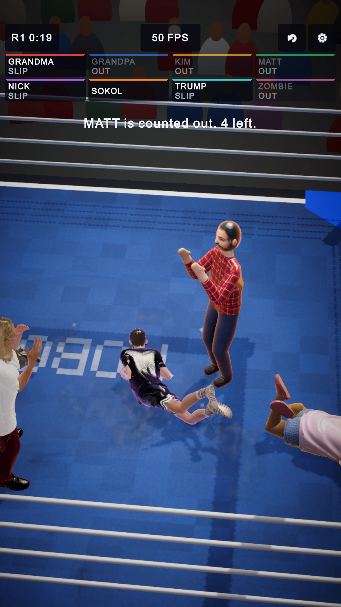
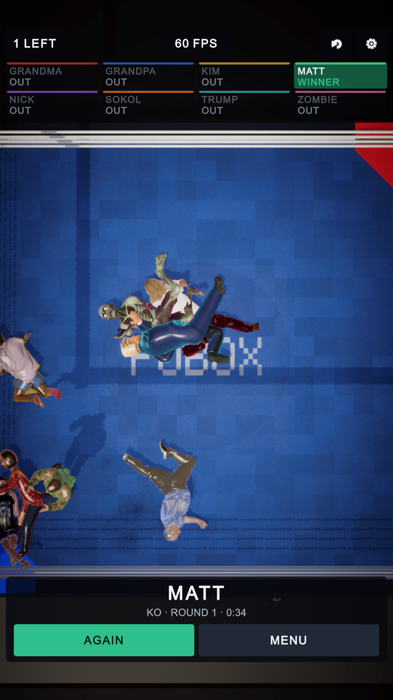

2026-10-15. The first screen gains a way into the free-for-all, and the free-for-all has a HUD of its own. Both pass
the layout audit (nothing off screen, clipped, overlapping, too small to read or to tap; the anchors where the other
screens have them) at 720×1280, 1080×1920, 1080×2400 and 1080×2520, with and without a notch (OneScreenTests).
Yellow: changed. Green: new.
First screen

FIGHT, full width
Before (Pixel 9 Pro): FIGHT across the whole row.

FIGHT, narrowerALL: free-for-all
After: ALL beside FIGHT, the same height, takes all eight into the ring. The cards above do not move.

After, at the smallest size (720×1280): still one screen.
The free-for-all's HUD

8 tall rows
Before (this afternoon's first version): eight tall rows over a quarter of the picture; a wide, fixed shot.

round · timeFPSback · settings2 rows of 4: SLIP, COUNT n, OUT
After: round and time left, the frame rate, back and settings (sound and the rest) on the usual anchors;
the board in two rows of four; the camera close on the hottest exchange.

the referee's call
The referee's calls (ROUND 2, a boxer counted out, the result) across the picture for 2.5 s.

result · AGAIN · MENU
The result: the winner and how (KO, round and time; or the judges' decision after three rounds), AGAIN and MENU.
(This picture is from a test camera overhead; the game's own looks down at the winner from over the ropes.)